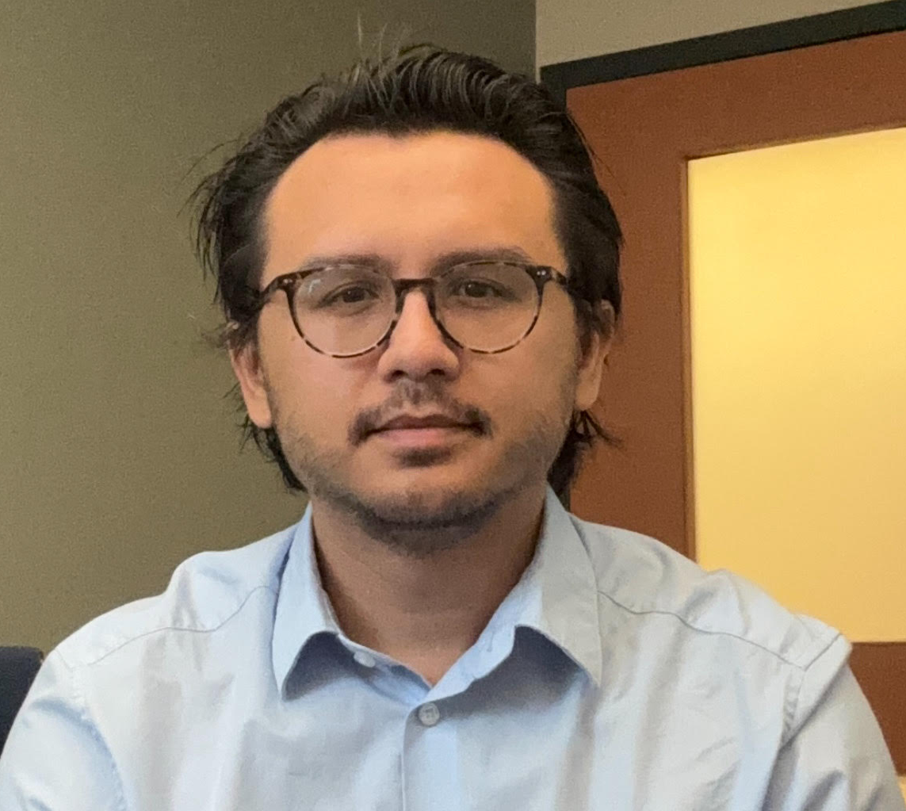
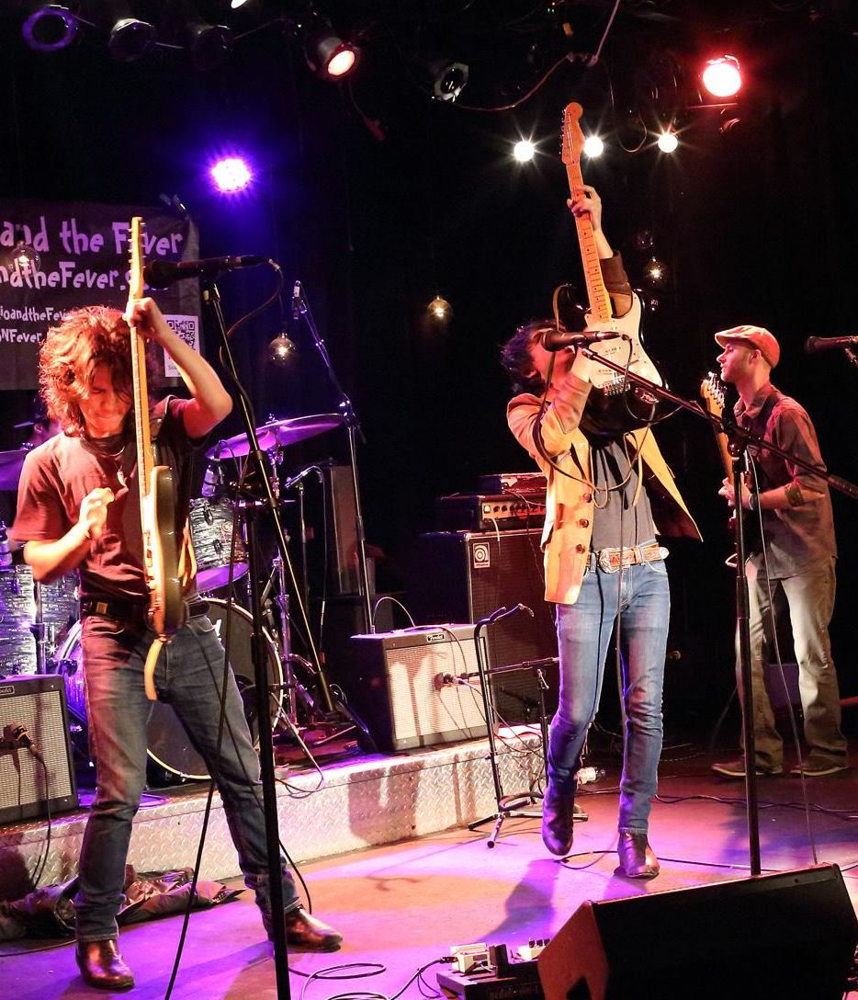
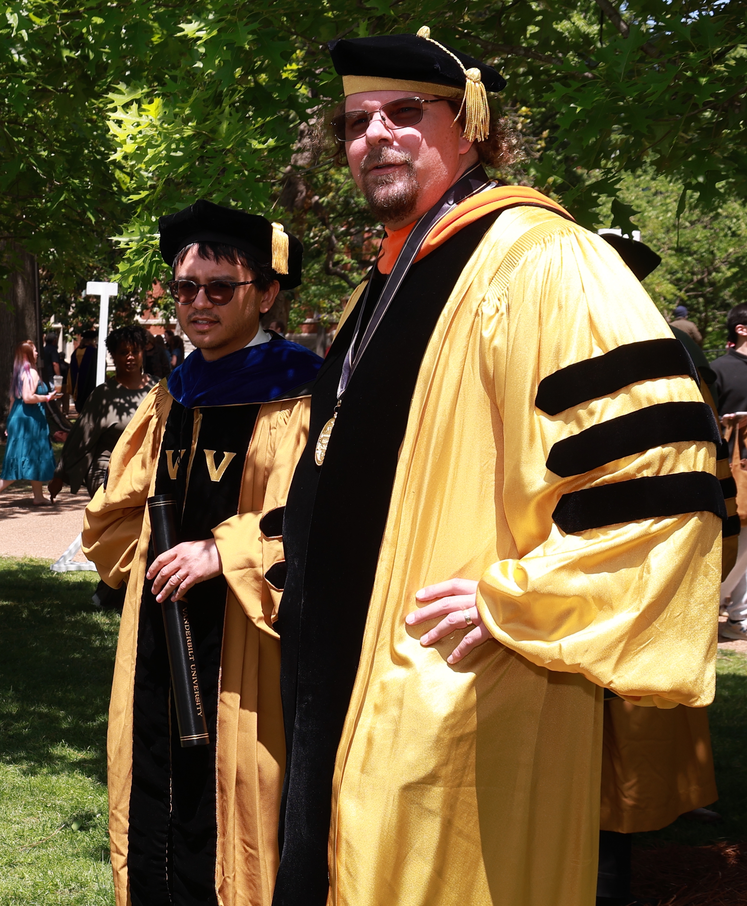

Lucas Remedios
Vanderbilt, Assistant Professor of the Practice, ECE
I use AI to measure interpretable signatures of disease in medical data at scale.
In type 2 diabetes, we found the most important shared anatomical trait between thin and obese patients was, surprisingly, poor muscle quality, pointing toward strength training as a potential preventative.
Background
Medicine started imaging the human body in 1895. Imaging is great, because without it, you have to be cut open to see precisely what's happening inside. But for most of that history, a physician looked at the image and made a subjective call.
In the modern era, the biggest leaps for humanity have come from unlocking hidden value in data at scale. Today, society is sitting on decades of accumulated human health data. Just at Vanderbilt, we have over one billion medical images. The value locked inside this data across global institutions could fundamentally change humanity's understanding of disease.
Big Questions
The search is for unknown links between disease, aging, and anatomy. Medical imaging at scale may be how we find them. For example, type 2 diabetes is correlated with being overweight. But then why do some thin people get it? And why do some obese people never get it?
Medical imaging data may hold the answers. But extracting them at scale is harder than it sounds.
Problems
There are real obstacles to answering these questions with AI.
- 1. Data Quality: People in the hospital are sick, and clinical scans are often taken fast under urgent conditions. Image quality is frequently poor and inconsistent. Doctors are smart enough to see past it, but AI isn't yet and most systems break when this kind of data scales. Images also look different across scanners, settings, and institutions, which confuses AI and leads to mistakes.
- 2. Physician Trust: Most medical AI is a black box. Why should a doctor trust it? If an AI model makes a claim, physicians rightly want the evidence and the rationale.
My Approach
I use deep learning to locate organs and structures in medical images, then measure them computationally. Every patient becomes a precise, interpretable fingerprint; a collection of anatomical measurements where every number traces back to exactly what was measured and where. When this is used to assess where a patient sits on the spectrum of disease, a physician can see directly which measurements are driving the model's decisions and what those measurements mean.
This is robust to the messy, inconsistent data of real clinical environments and produces outputs physicians can actually interpret. The framework applies to any disease with imaging data.
In type 2 diabetes, we found the most important shared anatomical trait between thin and obese patients was, surprisingly, poor muscle quality, pointing toward strength training as a potential preventative.
Vision
LLMs were considered toys until training data hit the right scale. Then through emergent behavior, something that looks remarkably like intelligence appeared. What happens when AI gets its hands on medical and biological data at the right scale? Enough data may already exist spread out across the world, sitting in silos behind hospital regulations. Maybe the missing key in humanity's understanding of disease and aging is waiting to be turned.
My work in AI and medical imaging has resulted in over 30 peer-reviewed publications and an h-index of 10. View my full record on Google Scholar.
Google Scholar →I was born in Silicon Valley and raised by both yin and yang. Mom: abstract artist, Dad: software consultant from the dot-com craziness. My teenage years were spent plunking out blues guitar at an arts school by the sea in British Columbia. This led to starting a band with my big brother and ending up in Nashville, working with Buddy Guy's Grammy Award-winning producer.

My brother eventually went back to school for Computer Science and I eventually followed. But in college I developed a strong curiosity for both computers and biology which led me to a PhD program at Vanderbilt under Bennett Landman, one of the best in the field. Through Bennett, my intellectual lineage runs unbroken back to Isaac Newton and Galileo. It was five years in a pressure cooker: get it done yesterday, 100% correct. Those two things pulled against each other, and the friction lit my hair on fire. But eventually I found the bucket of water.
Now I'm a professor down the hall from the lab where I cut my teeth, building a master's program in applied AI from the ground up.
I'm excited about the future and all the possible good that can be done with the current pace of technological development.
